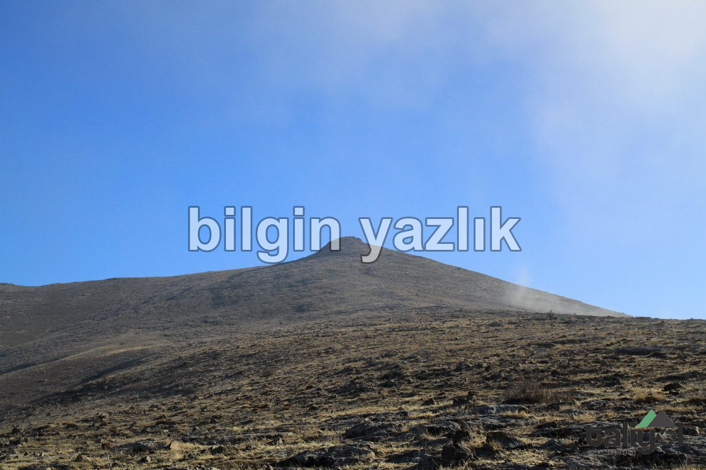
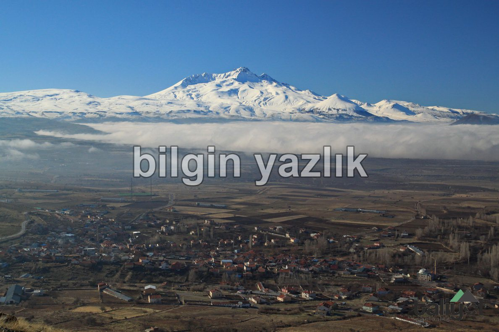
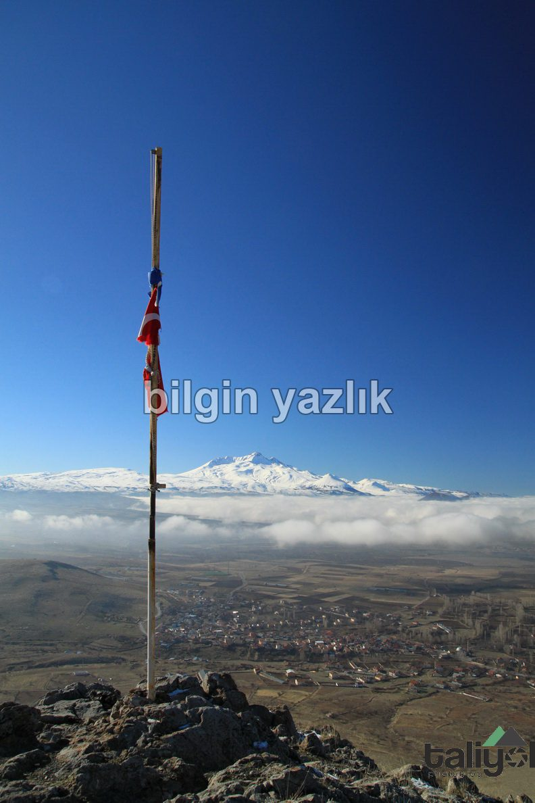

Kayseri & Koramaz · 7 Ocak 2018
Karahöyük Dağı
Kayseri’nin Gürpınar (Salguma) köyünün doğusunda yer alan bu dağda neredeyse hiçbir bitki örtüsü yok (sanırım adı da buradan geliyor).
Dağ tamamen bir kaya blok gibi duruyor ve dağın kuzey tarafında iki tane büyük taş ocağı bulunuyor.
Dağın zirvesi 1.777 mt rakıma sahip ve zirvede bir de bayrak bulunuyor.
Zirvenin doğu tarafı düzlük ve hemen kuzey tarafta ikinci bir zirve daha yer alıyor.
Köylüler dağın köyün su deposu olduğunu düşünüyorlar ve bugün gittikçe büyüyen taş ocaklarından şikayetçiler.
Dağın zirvesinden Erciyes harika fotoğraf veriyor.



Bu yazı taliyol arşivinden taşınmıştır. · özgün kayıt